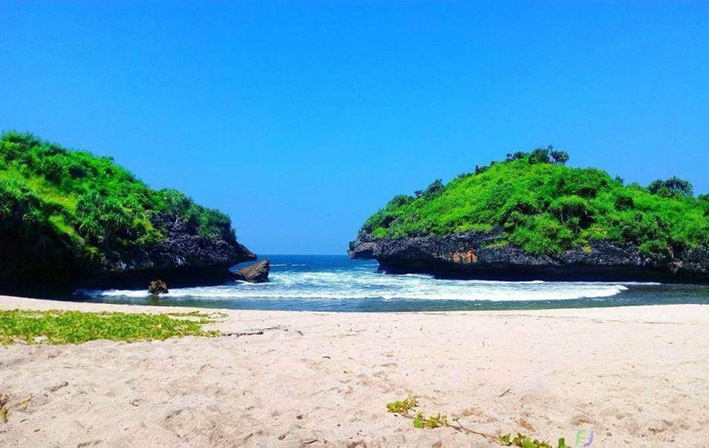

Pantai Sedahan Gunungkidul,
Pesona Pantai Diantara Dua Karang
Pantai Sedahan merupakan kawasan pantai berpasir putih di sebelah timur Pantai Wediombo dan berdekatan dengan Pantai Greweng Gunungkidul. Pantai ini menjadi alternatif lokasi berkemah atau camping selain Pantai Greweng dan sebagai salah satu spot memancing di sekitar Pantai Wediombo. Kondisi pantai ini masih cukup alami dan belum ada pembangunan kawasan wisata.

Lokasi Pantai Sedahan tepat berada di sebelah timur Pantai Sinden Gunungkidul. Ada dua pilihan untuk menuju ke pantai ini yaitu cara pertama langsung menuju lokasi pantai dan cara kedua menyusuri beberapa kawasan pantai. Cara pertama dengan melewati jalan berbatu selebar satu meter dari jalur utama Pantai Wediombo hingga tiba di kawasan Pantai Sedahan. Pengunjung dapat melalui jalan tersebut dengan menggunakan kendaraan roda dua (sepeda motor) hingga tiba di lokasi. Cara kedua dengan menjelajah kawasan pantai dari Pantai Jungwok ke arah timur menuju ke Pantai Sedahan. Cara kedua ini cukup menarik karena pengunjung akan menjelajahi beberapa kawasan pantai yang ada diantara Pantai Jungwok dengan Pantai Sedahan diantaranya Pantai Ngusalan, Pantai Greweng, dan Pantai Sinden. Selain itu selama perjalanan pengunjung akan dihibur dengan pemandangan alam perbukitan tepi pantai, sumber mata air tawar yang masih digunakan untuk kebutuhan air warga, goa alami, dan bebatuan kapur dengan bentuk yang unik.
Pantai Sedahan Gunungkidul memiliki garis pantai yang lebih panjang dibandingkan dengan Pantai Greweng yang ada disebelah baratnya. Pasir pantai ini berwarna putih seperti pasir pantai di Gunungkidul pada umumnya dengan tesktur sedikit kasar. Kedua sisi tebing karang menjorok ke tengah laut dan terlihat mengapit area pantai. Pengunjung dapat menuju ke puncak tebing karang tersebut dengan menaikinya melalui jalan setapak yang ada. Dasar karang yang terlihat saat ombak sedang surut banyak di temui ganggang dan rumput laut. Pada waktu-waktu tertentu rumput laut yang ada dipanen oleh para petani sekitar untuk dijual ke pengepul dan sebagian digunakan sebagai lauk makan.
Pantai Sedahan pada awalnya mulai ramai digunakan sebagai lokasi memancing baik oleh masyarakat sekitar atau para penghobi memancing dari luar daerah. Namun lama kelamaan pantai ini mulai favorit dijadikan sebagai lokasi camping atau berkemah para anak muda. Alasannya kondisi Pantai Greweng yang letaknya di sebelah baratnya mulai ramai digunakan untuk camping. Kemudian sebagian dari mereka memilih mencari pantai lain ke arah timur yang lebih sepi dan salah satunya adalah Pantai Sedahan. Pengunjung pantai ini diharapkan tetap menjaga kelestarian dan kebersihan lingkungan yang ada di sekitar pantai.